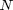
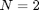
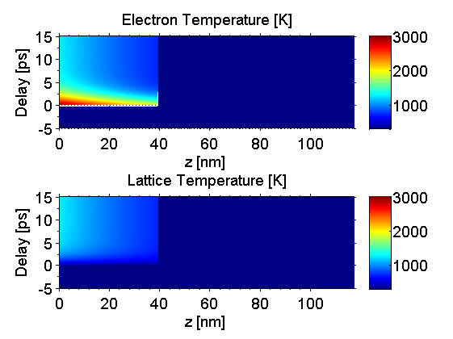
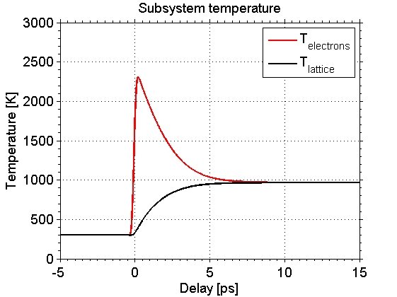

Heat N-Temperature Model Example
In this example we show how to use the heat simulations in order to calculate the excitation of a sample and its according temperature evolution within the -Temperature-Model (NTM) for . Here the first subsystem are the electrons and the second subsystem is the lattice.
Before we can start a heat simulation we need to build a sample structure. Be aware of that heat diffusion simulations can take a tremendous amount of time, especially for structures with a large number of unit cells.
For the NTM it is necessary that all unit cell properties which are relevant for the thermal simulations are input as cell arrays of length . We first disable heat diffusion within a subsystem by setting the corresponding thermal conduction parameters to zero. However, we have to set heatDiffusion to true to enable subsystem coupling.
Be sure to include all folders of the udkm1dsim toolbox to your MATLAB search path. Especially the /parameters and /helpers folders with all their subfolders.
Contents
here we clear the workspace and close all figures
clear all; close all; % these are some units and constants we can use later on u = units; const = constants;
Build a Sample Structure
% create atoms O = atomBase('O'); Ti = atomBase('Ti'); Sr = atomBase('Sr'); Ru = atomBase('Ru'); Pb = atomBase('Pb'); Zr = atomBase('Zr'); % c-axis lattice constants of the two materials cSTOsub = 3.905 *u.ang; cSRO = 3.94897 *u.ang; % sound velocities [nm/ps] of the materials svSRO = 6.312 *u.nm/u.ps; svSTO = 7.800 *u.nm/u.ps;
SrRuO3 unit cell
propSRO.aAxis = cSTOsub; % aAxis propSRO.bAxis = cSTOsub; % bAxis propSRO.debWalFac = 0; % Debye-Waller factor propSRO.soundVel = svSRO; % sound velocity propSRO.optPenDepth = 43.8*u.nm; % optical penetration depth propSRO.thermCond = {0,... % electronic heat conductivity 0}; % lattice heat conductivity [W/m K] propSRO.linThermExp = {1.03e-5, ... % electronic linear thermal expansion 1.03e-5}; % lattice linear thermal expansion [1/K] propSRO.heatCapacity = {@(T)(0.112.*T), ... @(T)(455.2 - 2.1935e6./T.^2)} ; % electronic and lattice % heat capacity [J/kg K] propSRO.subSystemCoupling = {@(T)( 5e17*(T(2)-T(1)) ), ... @(T)( 5e17*(T(1)-T(2)) )}; % energy flux between % subsystems [W/m^3] SRO = unitCell('SRO','SRO',cSRO,propSRO); SRO.addAtom(O,0); SRO.addAtom(Sr,0); SRO.addAtom(O,0.5); SRO.addAtom(O,0.5); SRO.addAtom(Ru,0.5); % SrTiO3 substrate propSTOsub.aAxis = cSTOsub; % aAxis propSTOsub.bAxis = cSTOsub; % bAxis propSTOsub.debWalFac = 0; % Debye-Waller factor propSTOsub.soundVel = svSTO; % sound velocity propSTOsub.optPenDepth = Inf; % optical penetration depth propSTOsub.thermCond = {0,... % electronic heat conductivity 0}; % lattice heat conductivity [W/m K] propSTOsub.linThermExp = {1e-5, ... % electronic linear thermal expansion 1e-5}; % lattice linear thermal expansion [1/K] propSTOsub.heatCapacity = {@(T)(0.0248.*T), ... @(T)(733.73 - 6.531e6./T.^2)} ; % electronic and lattice % heat capacity [J/kg K] propSTOsub.subSystemCoupling = {@(T)( 5e17*(T(2)-T(1)) ), ... @(T)( 5e17*(T(1)-T(2)) )}; % energy flux between % subsystems [W/m^3] STOsub = unitCell('STOsub', 'STOsub', cSTOsub, propSTOsub); STOsub.addAtom(O,0); STOsub.addAtom(Sr,0); STOsub.addAtom(O,0.5); STOsub.addAtom(O,0.5); STOsub.addAtom(Ti,0.5); % build the structure S = structure('Single Layer'); S.addSubStructure(SRO,100); % add 100 layers of SRO to sample S.addSubStructure(STOsub,200); % add 250 layers of STO substrate distances = S.getDistancesOfUnitCells();
Initialize Heat Simulation
cacheDir = './cache'; forceRecalc = false; H = heat(S,forceRecalc); H.setCacheDir(cacheDir); % set the cache directory H.heatDiffusion = true; % enable heat diffusion time = (-5:0.01:15)*u.ps; fluence = 15*u.mJ/u.cm^2; pulseWidth = 0.25*u.ps; initTemp = 300*u.K; excitation(1,:) = fluence; % fluence excitation(2,:) = 0; % time when the excitation happens excitation(3,:) = pulseWidth; % pulse width of the excitation % The resulting temperature profile is calculated in one line: tempMap = H.getTempMap(time,excitation,initTemp);
Calculating _heatDiffusion_ ... Elapsed time for _heatDiffusion_: 2.5895 seconds. Calculating _heatDiffusion_ for excitation 1 ... Elapsed time for _heatDiffusion_ with 1 excitation(s): 13.9289 seconds. Calculating _heatDiffusion_ ... Elapsed time for _heatDiffusion_: 9.7818 seconds. Elapsed time for _tempMap_: 26.5773 seconds. _tempMap_ saved to file .\cache\tempMap_88c28757751f2886eec20b6840480d4f_57256cb2459efe37ee9e6ba12efcb3bf.mat
Plot the temperatures of each subsystem
figure(1) subplot(2,1,1) kk = surf(distances/u.nm,time/u.ps,tempMap(:,:,1)); set(kk, 'LineStyle', 'none'); title('Electron Temperature [K]'); xlabel('z [nm]'); ylabel('Delay [ps]'); axis([distances(1)/u.nm distances(end)/u.nm time(1)/u.ps time(end)/u.ps]) box; colorbar; colormap(jet(255)); caxis([300 3000]); set(gca, 'XMinorTick', 'on', 'YMinorTick', 'on', 'TickDir', 'out'); subplot(2,1,2) kk = surf(distances/u.nm,time/u.ps,tempMap(:,:,2)); set(kk, 'LineStyle', 'none'); title('Lattice Temperature [K]'); xlabel('z [nm]'); ylabel('Delay [ps]'); axis([distances(1)/u.nm distances(end)/u.nm time(1)/u.ps time(end)/u.ps]) box; colorbar; colormap(jet(255)); caxis([300 3000]); set(gca, 'XMinorTick', 'on', 'YMinorTick', 'on', 'TickDir', 'out');
Plot the average electron and lattice temperature of the SRO layer
figure(2)
plot(time/u.ps, mean(tempMap(:,S.getAllPositionsPerUniqueUnitCell{1},1),2), '-r', 'LineWidth', 2);
hold on;
plot(time/u.ps, mean(tempMap(:,S.getAllPositionsPerUniqueUnitCell{1},2),2), '-k', 'LineWidth', 2);
title('Subsystem temperature');
xlabel('Delay [ps]');
ylabel('Temperature [K]');
box on; grid on;
ylim([0 3000]);
set(gca, 'XMinorTick', 'on', 'YMinorTick', 'on', 'TickDir', 'out');
legend('T_{electrons}', 'T_{lattice}');
